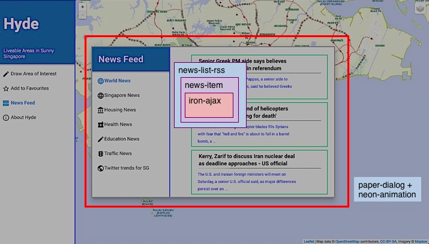

What I learnt Playing with Google Polymer
June 2015
Google Polymer
Production Ready 1.0 version released on 29 May 2015
Google Element Catalog: A collection of Web Components


Getting Started with Google Polymer
- Installing via Bower:
bower install --save Polymer/polymer#^1.0.0 - Browse Element Catalog and bower install
your desired element, i.e:
Versions may update but bower handles it for you!bower install --save PolymerElements/paper-drawer-panel#^1.0.0
Also, bower update as Polymer is developing rapidly!
Hyde
Built with Polymer, Mongoose, Leaflet & OneMap on
Cloud9 IDE
Hyde Elements
Hyde Elements
Hyde Elements
Google Material Design Framework
Which Google Polymer is based on
Paper is the Metaphor
Colour & Shadow Templates
Found in paper-styles
link rel="import" href="bower_components/paper-styles/paper-styles.html"
#newsDesc {
color: var(--google-blue-100);
}
Animations
Paper Ripple, Neon Animation
Google Web Components: Iron-AJax
- Makes AJAX calls for Google RSS feed in custom element
- Use dom-repeat template to create a news-item element for each JSON entry in the feed
- Bind entries to items attribute
- Get required value of item like: {{item.title}}
Google Web Components: Google-Charts
- Implementation of Google Charts: Find detailed parameters at Google Visualisation API
- Can read in a 2D array or JSON file in DataTable format
- Call drawChart() to resize charts
Custom Elements
Making your own elements
Community of elements at customelements.io
Let people use your element @ Reusable Elements!Abstraction of Web Components
Problem: Repetitive Code Blocks
Solution: Define your own custom element!
That's the essence of Web Components
Custom Elements: Shadow DOM
- Defining a news-item custom element
- CSS Styles kept within the element
- Can be pierced through with ::shadow
or /deep/selectors
...
To style the element in main.css use:
news-item { color: var(--paper-pink-400); ... }
Custom Elements: Template
- Define element template as HTML code
- Attributes binded with {{attribute}} tags
- Content tags allow dynamic content, similar to
content within <p> tags - Read more on Web Components Tutorial
...
{{news}}
{{desc}}
Custom Elements: Script
- Define properties/ attributes of elements, initialise default values
- Also have Computed Properties
- Define functions/handlers for element property changes: Allows for two-way data-binding
...
Custom Elements: Script
...
- When element is constructed, ready: function() is called.
- Console will log value of news
- News is an attribute with type String and default value Twitter
Polymer vs AngularJS vs JQuery
A Comparison in June 2015
| Polymer | AngularJS | JQuery | |
|---|---|---|---|
| Ease of Use | Easy Too new |
Easier Many community- published directives |
Easiest huge community |
| Best for | Building encapsulated web components | Framework for SPAs + data binding | Collection of tools |
| OS/ Platform | Browser based, adapts to window size | Desktop, Browser, Mobile | Browser + JQuery Mobile |
| Data Persistence | None | MVC Data Binding | None |
Some thoughts
| Polymer |
Wait for more stability & documentation Current status: New components being pushed out, best to wait until stable otherwise develop unnecessarily |
| AngularJS | Useful for web framework with data |
| JQuery | Useful for tools (animation, ajax) |
| Polymer + Angular |
Possible combination for full stack Had problems with conflicting templating syntax Possible Solution: Change Angular Interpolate Provider Polymer vs Angular? |
| Angular + JQuery | Often used If JQuery is not present, Angular will use JQueryLite |
Final Thoughts
Polymer is promising
My internship is over! :)